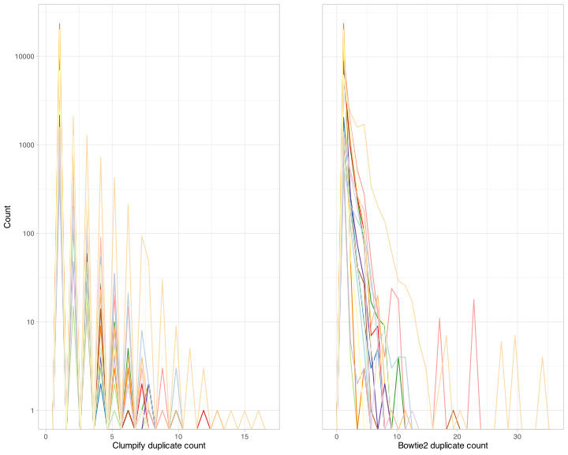

clumpify_dupcount_plot <- hv_hits |>
ggplot(aes(color = sample, x = clumpify_dupcount)) +
scale_y_log10() +
geom_freqpoly() +
scale_color_manual(values = colors_sample_source) +
theme_light()
bowtie2_dupcount_plot <- hv_hits |>
ggplot(aes(color = sample, x = bowtie2_dupcount)) +
scale_y_log10() +
geom_freqpoly() +
scale_color_manual(values = colors_sample_source) +
theme_light()
ggarrange(clumpify_dupcount_plot, bowtie2_dupcount_plot, ncol = 2, common.legend = TRUE)`stat_bin()` using `bins = 30`. Pick better value with `binwidth`.Warning in scale_y_log10(): log-10 transformation introduced infinite values.`stat_bin()` using `bins = 30`. Pick better value with `binwidth`.Warning in scale_y_log10(): log-10 transformation introduced infinite values.`stat_bin()` using `bins = 30`. Pick better value with `binwidth`.Warning in scale_y_log10(): log-10 transformation introduced infinite values.